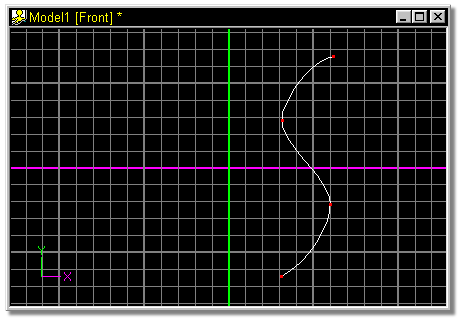
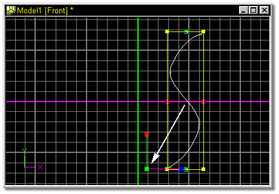
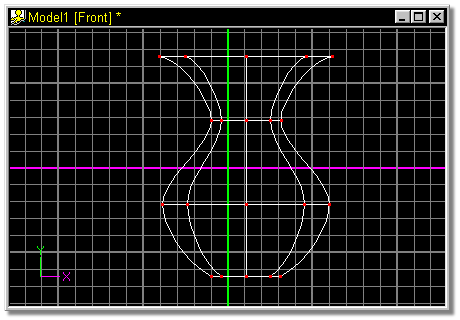

Lathing is a common modeling technique, and one that provides fantastic
results with very little effort. Lathing is justly named after the spinning table
used to make pottery since lathed objects are symmetrical and often resemble
vases.
Lathing is a common modeling technique, and one that provides fantastic
results with very little effort. Lathing is justly named after the spinning table
used to make pottery since lathed objects are symmetrical and often resemble
vases.
To lathe, first draw a silhouette spline vertically in the front view. Both smooth and peaked control points can be used in this spline. Select this spline by clicking on any point along the spline. Clicking the lathe button at this point will produce a beautiful, perfectly lathed segment. Once this function is complete, control points can then be manipulated normally to alter the shape.
The default number of cross sections is 8, however, this can be changed by selecting Options from the Tools menu, and clicking the Modeling tab.
The default keyboard shortcut key for Lathe is L.

Create a silhouette spline vertically in the front view. Clicking any point along the spline then clicking the Lathe button will lathe this spline using the Green Y Axis marker in the center of the screen as the center of revolution.

To vary the location of the center of revolution, select any point along this spline and press the
“/” key to group connected. Click the Scale Manipulator button, and position the pivot by clicking on the green dot and dragging it to a new location.

Click the Lathe button.
The result:

Related Topics:
Adding Control Points
Attaching Control Points
Detach Point
Break Spline
Delete Control Point
Insert Control Point
Peak
Magnitude
Bias
Group Mode
Lasso Mode